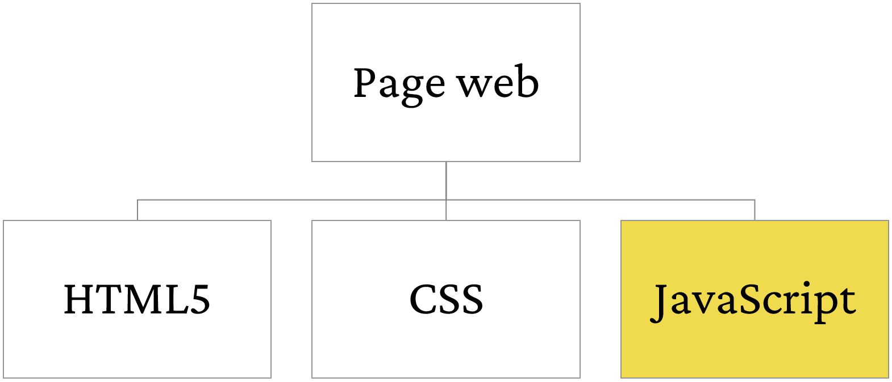

Interactivité avec JavaScript
Mattia A. Fritz
TECFA, Université de Genève
Composantes des pages web
JavaScript et le navigateur web
<!DOCTYPE html>
<html lang="fr">
<head>
<title>Une page HTML5</title>
<meta charset="UTF-8">
<!-- Téléchargement du CSS -->
<link href="assets/css/style.css" rel="stylesheet">
</head>
<body>
<!-- Téléchargement du fichier JS -->
<script src="assets/js/app.js"></script>
</body>
</html>
Les instructions sont téléchargées avec la page.
Un moteur JS dans le navigateur

Le code est interprété à l'intérieur du navigateur.
L'objet global window
window.
- Ouvrez la console du navigateur F12
-
Entrez
window -
Après entrez
window.innerHeight -
Enfin entrez
window.location.href
Accès au DOM de la page
window.document qui donne accès au
DOM.
-
Entrez
window.documentdans la console -
Puis seulement
document -
Maintenant entrez
document.title -
Et enfin
document.body
Manipulation du DOM
-
Entrez
document.getElementById('slideTitle').innerHTML -
Puis
document.getElementById('slideTitle').innerHTML = 'On peut faire mieux !'
Instructions pour la présentation
- Entrez
Revealdans la console -
Puis entrez
Reveal.getTotalSlides() -
Et finalement entrez
Reveal.next()
Facile, n'est-ce pas ?
Maintenant regardez le code HTML du bouton.
<button onclick="Reveal.next()">Prochaine slide</button>Que ce passe-t-il si vous cliquez ?
Voilà !
Les applications interactives sont une extension de ce mécanisme de base :
- Les instructions sont codées en amont et téléchargées avec la page
- Elles sont ensuite déclenchées par des événements, comme par exemple le clique sur un bouton
- Elles comportent enfin des changements à l'état de l'application, par exemple des modifications perceptibles à l'interface à travers des modifications du DOM.
Gestionnaire d'événements
Comme pour CSS, on peut ajouter du code en dehors des balises HTML5 en utilisant, par exemple, un event listener.
<button id="nextSlideBtn">Prochaine slide</button>
// Code JavaScript
document.
getElementById("nextSlideBtn").
addEventListener("click", function() {
Reveal.next();
});
On identifie le bouton dans le DOM et on détermine l'action à déclencher lors de l'événement click
Autres événements
Insérez un mot pour voir l'équivalent en code binaire.
Événement keyup
Autres éléments interactifs
Cliquez sur les parties du visage pour voir le nom en anglais.
Déclencher des animations
 Leonardo da Vinci,
CC BY-SA 4.0, via Wikimedia Commons
Leonardo da Vinci,
CC BY-SA 4.0, via Wikimedia CommonsInteraction en continu
Interaction avec la voix
Click the microphone and say the name of one of these colors. It will appear on screen!
Your browser does not support speech recognition, sorry!
En synthèse
Pour créer une interaction il faut :
- Identifier l'élément interactif dans le DOM
- Lui appliquer un gestionnaire d'événement associé à un type d'événement spécifique
- Définir une règle de comportement (i.e. une fonction) qui est déclenchée par l'événement
Pour aller plus loin
Les concepts abordés dans cette présentation sont traités de manière plus exhaustive dans Interactivité avec JavaScript sur EduTechWiki.
EduTechWiki est un wiki sur la technologie éducative hébergé est maintenu par TECFA, une unité de l'Université de Genève, depuis 2006.

.jpg){kind=link}